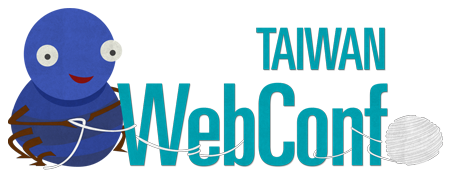
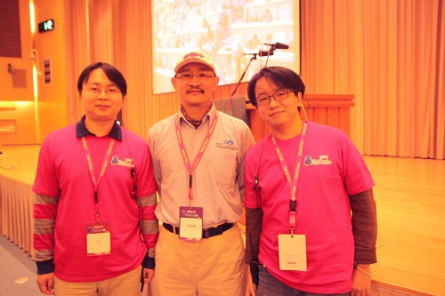
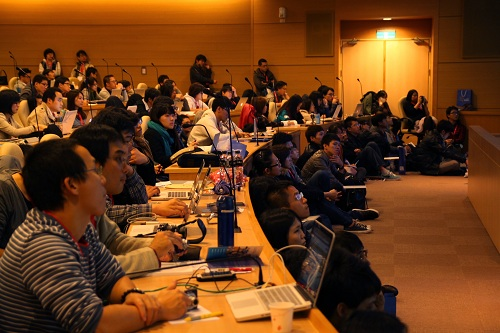

也紀念我們永遠的朋友 李士傑先生（Shih-Chieh Ilya Li）。
Web 界的盛會：WebConf 2013 會後報導
今年 (2013) 1 月 12 日，飄著陰雨的週六早晨，將近 700 人聚首於中央研究院人文社會科學館，參加週末一連舉辦兩天的 WebConf Taiwan 2013 (Web Conference, Taiwan)。不同於以往眾多研討會聚焦在特定語言或技術，WebConf 是台灣第一個由社群所發起，以「網站開發及設計」為主題的大型研討會，並邀請各方領域的講者來分享；同時，國內幾個技術開發社群如 JSDC、PHPConf、PyCon；設計師社群 IXDA 以及自由軟體社群 MozTW、Ubuntu.tw 等，也都進駐擺攤，內容相當豐富。

《圖一》WebConf 2013 的 logo 及吉祥物「蜘蛛」。
從 PHPConf 到 WebConf
WebConf 的發起人－Daniel (pct) 與高見龍（龍哥）－最初是在 PHP 讀書會時認識的。龍哥與 PCT 原本都只是單純的工程師，工作幾年後，意識到自身專業也必須與時俱進。於是，利用業餘時間參與讀書會，並且也開始投身技術開發社群中，交流分享彼此的所學與想法。2011 年，兩位更發起了 PHPConf Taiwan 2011 (PHP Conference Taiwan)，並與中研院資創中心的自由軟體鑄造場 (Open Source Software Foundry, OSSF) 共同合作，籌辦了一場超過百人、中型規模的社群研討會，並且在開放報名的短短八分鐘內，即告額滿。
WebConf 依始於 PHPConf 2011 成功落幕，pct、龍哥與社群朋友在閒聊時，一句無意間脫口而出的話：「如果我們辦 WebConf，感覺人數一定會爆滿。現在很多人都對 Web 很好奇。」網路的普及與便利使其蓬勃發展，不只是擁護各項技術的工程師人才，也需要法律、企劃、美術領域的相關人才投入。藉由一個以 Web 為號召的議題，相信能同時讓更多領域的人彼此有所交流。
因此，首次的 WebConf 逐漸醞釀，在以「網路」為主題集合裡，兼容不同的開發技術、網頁設計師、行銷人員。知名的台灣互動設計社群 IXDA，在 pct 及龍哥的邀約下，也答應投入 WebConf 2013，成為工作人員。
為了 Web 設計的整體性，並希望能達到跨界的溝通及交流，除了工程師以外，WebConf 更在票種上規劃了「設計師保留票」，並在議程中新開闢網頁設計與美術前端工程的議題，讓講師及與會者可以共同討論未來網路世界中每一片扉頁，將美感與良好的體驗融入到網路世界；顯見主辦單位的用心。
WebConf 的開展：Ruddy 的大會演講
龍哥與 pct 十分重視的大會演講 (Keynote Speech)，也讓他們卯足全力，前去拜訪未曾蒙面的李智樺 (Ruddy) 老師。全台灣很難找出開發經驗超過 30 年，仍醉心於 R&D 領域的工程師；走過早期 Apple、PC XT/AT 組合語言、BASIC、C、C++ 語言，到近期的 JavaScript、PHP 等，他都仍有在持續涉獵。
龍哥與 pct 前往拜訪時，並不敢懷抱太大的希望。一方面調整期待，以防免遭拒的失落感，一方面也希望能降低與前輩會面的緊張情緒。喜出望外的是，在了解龍哥與 pct 的想法後，Ruddy 一口答應擔任 WebConf 2013 的大會演講講師，並且大力相挺，表示這是台灣很需要的一股力量。這使得 WebConf 跨出了最重要的一步，也讓兩位發起人頓時放下心中的石頭，大步向前邁進。

《圖二》Ruddy（中）與 pct（左）及龍哥（右）的合影。
「寫程式是一種興趣，而且永遠滿懷熱忱，能對社會有貢獻。」
WebConf 2013 的序章，由 Ruddy 寫下。全場人數近 600 人，以「Making it Big in Web（開發 Web 的遠大前程）」的宏觀主題，談論現在與未來；並以工程師的角度闡述，面對未來更多隨時可能變動的領域時，如何才算是一位成功的工程師。「寫程式是一種興趣，而且永遠滿懷熱忱，能對社會有貢獻。」Ruddy 給了這個結論。
此外，還直指工程師的心態，Ruddy 說了一段印象深刻的話：「如果有人賞識你寫的 code，應該要開心；人的一生寫不出幾支真的很有原創性，或是震撼人的，如果有人有興趣，當然可以分享給他，有人使用你的程式是多麼喜悅的一件事。讓自己成為真正有價值的人，並不只是收入，更多的是分享與付出。」從他的身上，能清楚看到他仍維持高度興趣，持續關注著資訊科技；此外，當天的簡報也是自己用 Windows 8 所寫的，不忘記終身學習。勉勵台下的聽眾，不論是否為工程師，Ruddy 所講的，都是值得網路產業的人才們所學習的。
《圖三》座無虛席的國際會議廳。
網站開發所需的概念：「Curation Web」及「兜兜哲學」
而 Ruddy 在最後，提出「Curation Web」的概念，並指出與其說是「策展」，不如說是一種「兜兜哲學」來得更易懂。而且這樣的概念早已經存在，像是 CoffeeScript 或是 TypeScript 都是希望增加程式碼的簡潔性與易讀性，以及製作大型軟體而存在。以整個 IT 技術的歷程來講解：我們從最早的「元件」的概念，發展出「物件」的概念；再發展出了「設計模式」，像是將電腦技術用於工程繪圖上，發展出 AutoCAD 的軟體；又發展出「開發框架」能夠導入 libraries 或是 classes 的集合系統；到了現在，開始有更多「服務」也能「兜」一起，像是許多電子商務網站的後端金流系統，多是使用銀行直接提供的程式。而工程師想盡辦法，讓一切完善的方法，透過各種組合、截取各處優點來突破的方式，就是所謂的「兜兜哲學」。
面對網路產業的各項應用，需要更多領域的人才投入。此次的議程即包含兩個主要脈絡：網站設計與工程開發。除了 Ruddy 的大會演講，第一天下午的大會演講，邀請到 HPX（Happy Planner；網站企劃輕鬆聚）的共同創辦人蔡明哲 (Richard Tsai) 主講網站企劃，第二天上午的大會演講則由微網誌暨社群網站 Plurk（噗浪）的創辦人雲惟彬 (Alvin Woon) 擔任。Richard 在網站企劃有多年專長，點出許多網站從業人員的盲點，也分享從企劃面建立起網站工作的一體性；Alvin 以身為工程師所看到的社會，以及身為一個網路創業家，向與會者分享經驗、心得及建議。大會演講的安排，貫穿了工程師、設計師、創業家的內容，在在可看出 WebConf 2013 的整體規畫也緊扣住「Curation Web」的核心概念。
在 WebConf 2013 兩天的各個議程當中，在開發者脈絡下的議程安排，包含介紹了許多各式不同的開發框架，以及各種技術的應用，例如 WebGL 功能、Node.js 相關觀念、PHP 的使用、Heartbeat 搭配 DRDB 的運作、JavaScript 與 HTML5 的應用、Media Query 的嵌入、網站效能調校技術、Drupal 版型引擎、Python 開發 Web 的工具……等諸多精彩內容，可以在「WebConf 2013 懶人包」這個由社群成員自發建立的公開文件中，找到各個議程投影片的連結。

《圖四》熱門的設計脈絡議程及熱情的與會者。
跨界交流、溝通藝術
設計師脈絡的議程每場都爆滿，有許多人直接坐在前面聆聽，內容包含 Wordpress 的應用、Mockup 的細節、CSS 語法在 Sass 及 Compass 的運用、WebFont、網頁設計技術的專業、Flash的現形、使用者體驗設計、使用者介面設計等議題，亦是相當豐富多元。
從這次 WebConf 中能發現到一個現象，不論是大會演講、以工程師為主脈絡或設計師為主脈絡的議程中，許多講者都不約而同地提及「溝通」的重要性。
「溝通藝術：設計與開發如何真心合作？」的講師楊喆淇 (Hitomi) 談到，尊重各自的專業、試圖理解工程師的想法、用對方能聽懂的語言溝通，並建議可以多善用「圖表」做為溝通的工具。Ruddy 提及 SCRUM 敏捷開發方法時也提到，帶領一個團隊，需要更多在一起溝通的會議，以確保彼此的共識，雖然看似很浪費時間，卻是必要的做法。
WebConf 結束後，正在就讀大學的與會者 Dylandy 表示：「我們不只侷限在學校所學、書本所教的僵硬知識。從一個資訊菜鳥的角度來看，這次的活動讓我學習到非常多、非常充實的知識和觀念，因為各式議程主題，我們可以根據自己的能力，挑選適合的方向來學習，這些議程給了我一種在學習上的啟發，新的方向。」筆者也相當肯定主辦單位在議程的安排及票種的設計上，也兼顧了初學者及學生的需求。
共同打造一個更好的 Web！
2012 年起，行動裝置開始將 Web 應用帶到另一個全新的領域，2013 年則是全面的普及，使得 Web 在人們的生活中已全然地不可或缺。WebConf 2013 的內容讓我們認知到，網路是一個集合，需要不同領域的人才，也需要彼此充分溝通。網站設計及開發的成果終將共同展現，每一個環節都有許多學問，可以集結更多的專長來分享交流。
首屆舉辦的 WebConf 的一般票，開放售票不到五分鐘就全數售罄，可謂是從 2012 年以來諸多社群主導的研討會中，開創新的紀錄，也顯見眾人對於 Web 領域知識的興趣及渴望。接下來 2013 年，陸陸續續還有各個相關的研討會可以學習新知，包括 5 月 18 – 19 日的 JavaScript Developer Conference Taiwan (JSDC.tw)、5 月 25 – 26 日的 Python Conference Taiwan (PyCon Taiwan) 以及 10 月 5 日的 PHP Conference Taiwan (PHPConf Taiwan) 在內，都能讓對 Web 技術有興趣的朋友持續學習進修。
至於 WebConf 2014 的主題是什麼？將安排什麼內容？或許就連主辦的龍哥及 pct 都無法立即一語道出。不過，在網站設計及工程技術日新月異的年代中，肯定又有許多新的知識及內容可以分享。期待 WebConf 2014，也期待個人的努力、社群的投入、產業的經營，讓我們可以共同打造一個更好的 Web！
Special


Address：No.128, Sec.2, Academia Rd., Institute of Information Science, Academia Sinica, Nangang District, Taipei City 11529, Taiwan (R.O.C).
Privacy Policy. Terms-of-use